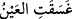
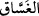
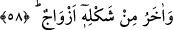
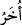

kelimesiyle birlikte çokça kullanılır. Bu azap, sıcaklığı son raddeye varmış bir su, yâni
o, çok sıcak bir su -ki dudağın önüne yaklaşınca onu yakar ve içtikleri zaman ise
(dudak) iki parça olur- ve irindir, yâni cehennemliklerden akan şeylerdir. (
)
kelimesi, (
) misâlindeki gibidir ki anlamı, “gözün yaşı aktı” demektir.
Kâşifî der ki: Bu kelimeden maksad, cehennemliklerin et ve derisinden zinâ edenlerin
de cinsel organlarından akan irindir. Onları toplayıp bu kişilere içirirler.
İbn Abbâs der ki: Buradaki “azab” zemherir olup cehennem ateşinin yakması gibi,
zemherîrin soğuğu da onları yakacaktır.
el-Kâmûs’ta der ki: (
) kelimesi, “Sehâb” ve “şeddâd” vezninde olup “son derece
pis kokulu soğuk bir nesne” demektir. Şâyed bir damlası doğuya damlatılacak olsaydı
batıdakiler; batıya damlatılacak olsaydı doğudakiler leş gibi kokardı.
Hasan-ı Basrî’den rivâyet edildiğine göre de “Hiç kimse, yapmakta olduklarına
karşılık olarak, onlar için saklanan göz aydınlıklarını bilemez” (es-Secde 32/17)
âyetinde de bildirildiği gibi, birtakım insanlar Allah için öyle gizli amellerde
bulunmuşlardır ki, Allah da kendilerine vereceği sevabı gizlemiştir. Bazıları da öyle
gizli birtakım mâsıyetler işlemiştir ki bunlara verilecek cezâ da gizlenmiştir.
Bir görüşe göre ise (
), akrep ve yılan gibi bilumum zehirli varlıkların
zehirlerinin aktığı cehennemdeki bir çukur olup buraya düşen bir insanın eti ve derisi
kemiklerinden sıyrılır imiş.
et-Te’vîlâtü’n-Necmiyye’de der ki: Bugün kazanmakta oldukları şeyleri kıyamet günü
tadsınlar bakalım! Âyetin merâmı şudur: Cehennemliklerin bugün mânâ olarak
kazandıkları şeylerin sûreti, kıyamet günü kaynar su ve irin olacaktır. Ne var ki, onların
tad alma duyguları amellerinin kötülüğü yüzünden şu anda kazanmakta oldukları
şeylerin acısını hissetmeğe yetmediği için bu elemi kıyamet günü tadsınlar!
Her kim iyilik yaparsa, iyilik bulur,
Kötülük yapan da kötülük bulur.
İşte mü’minler meyve ve içeceklerden zevk alırken, kâfirler de kaynar su ve irinlerden
acı duyacaklardır.
58. Buna benzer daha türlü türlü başkaları da vardır.
“Buna benzer daha türlü türlü başkaları” yâni sıkıntı ve fecîlikte bu tadılan ya da
çekilen azâbın bir benzeri tad ya da azaplar “da vardır.”
“Daha başka” anlamına gelen (
) kelimesi, birinci mübtedâ, “türlü türlü” demek